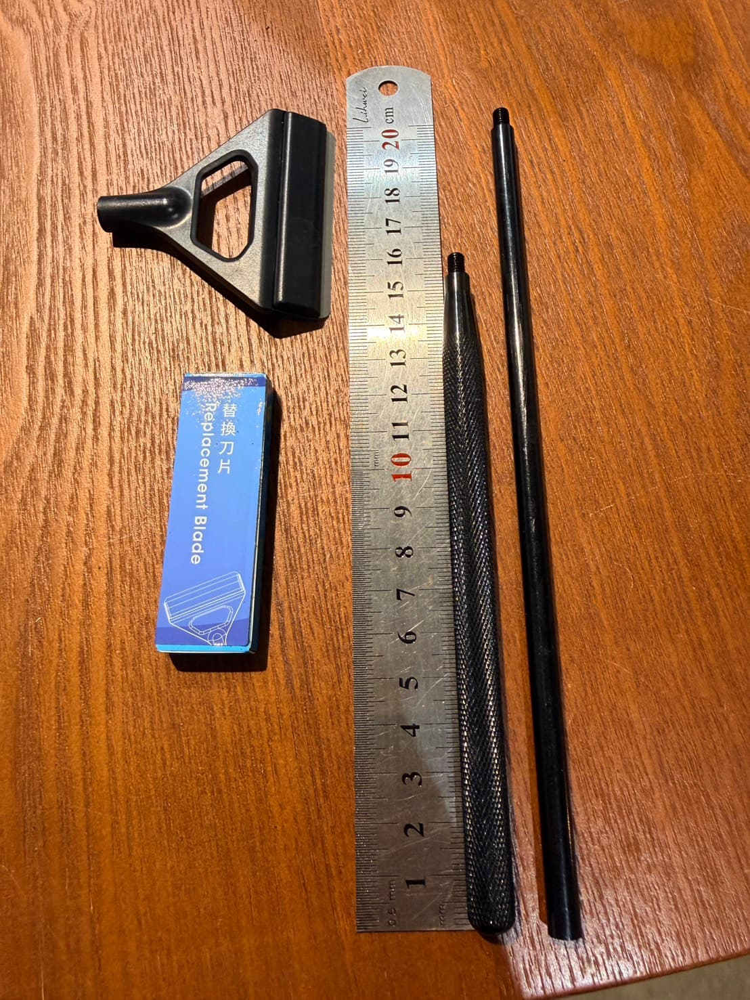
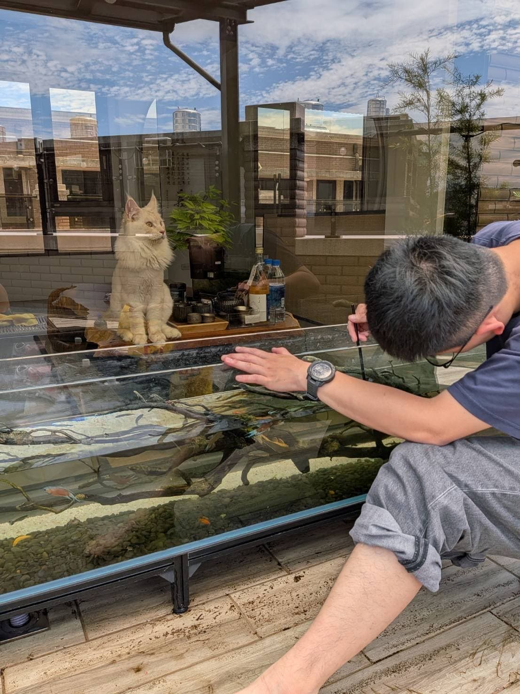

水族用品｜新竹新埔宇魚水族
除藻刮刀
現貨供應中NT$ 250 起
【宇魚水族】專業級兩用除藻刮刀組｜附10片替換刀片・長短柄自由切換 魚缸爆藻、玻璃霧茫茫影響觀賞品質嗎？為您推薦這款實用度破表的專業級兩用除藻刮刀！無論是日常維護還是大掃除，都能讓您的魚缸瞬間恢復透亮，輕鬆跟頑固藻類說掰掰。 ✨ 產品核心優勢 長短柄自由切換，除藻更省力 內附 20公分長桿 與 15公分短桿，可根據不同魚缸的水深及大小靈活調整刷柄長度。不管是深缸底部還是淺缸角落，都能找到最順手的施力點，讓清潔工作事半功倍！ 貼合缸壁，絕對不傷玻璃 刀頭設計精良，刮除力道均勻且平整貼合缸壁。能有效刮除難搞的綠斑藻、褐藻，同時保護魚缸玻璃不受刮傷，給愛魚最安全的透視環境。 結構極簡，用後好清潔 刮刀材質耐水防鏽，使用完畢後只需清水簡單沖洗擦乾即可，不卡髒污、不藏水垢，日常維護超方便。 超高CP值，一次附滿耗材 隨包裝直接附贈 10片專屬替換刀片！輕鬆替換常保銳利，整組買回去長時間不用擔心耗材問題。
價格、規格與庫存
| 規格 | 價格 | 狀態 | 選購 |
|---|---|---|---|
| 無規格 | NT$ 250 | 有現貨 | 前往選購 |
商品與購買資訊
- 商品編號a49
- 商品分類水族用品
- 門市位置新竹縣新埔鎮義民路二段630巷9號
- 購買方式門市挑選／網站下單；活體提供專業包裝配送